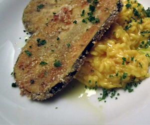

Auberginenschnitzel
5,5 von 6Auberginen der Länge nach in ca. 1 cm dicke Scheiben schneiden. Die Schnitzel zuerst in etwas Mehl wenden, durch ein zerquirltes Ei ziehen und mit Paniermehl beidseitig bedecken. In einer Bratpfanne in viel Sonnenblumenöl beidseitig goldbraun braten.
